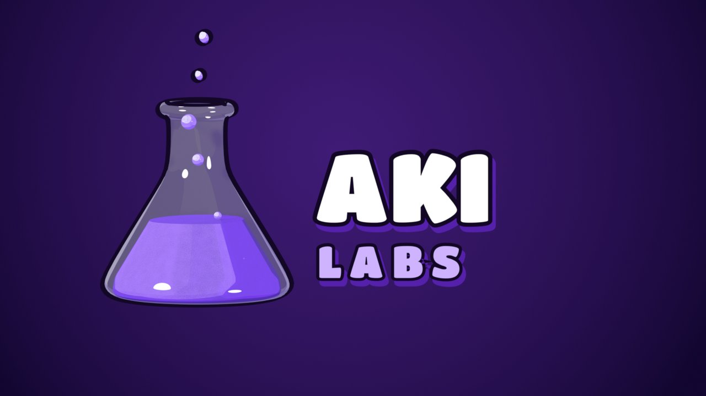
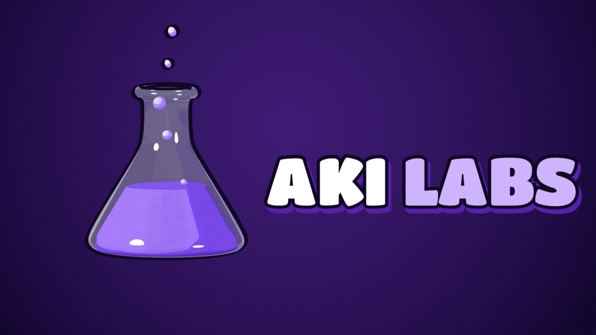
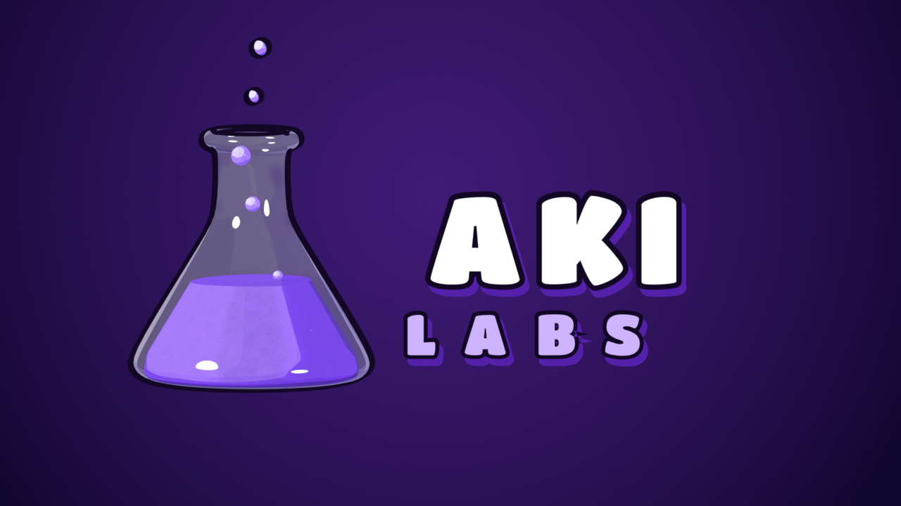
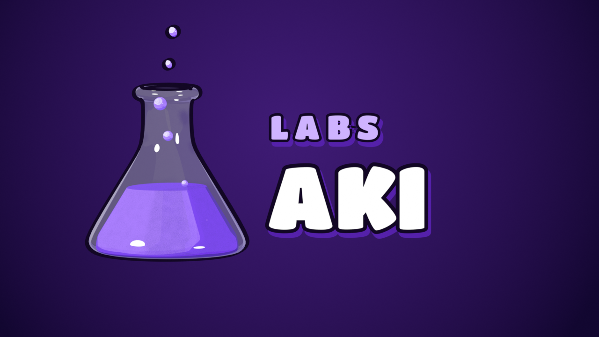

Aki Labs · v4 (sans A, typo Titan One)
Animations : le texte sort de derrière la fiole
1 · Empilé
2 · Une ligne
Les 4 dispositions (image finale)

1 · Empilé

2 · Une ligne

3 · Empilé espacé

4 · LABS en haut